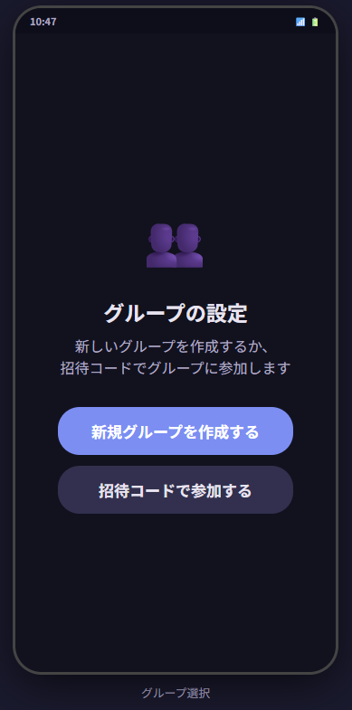
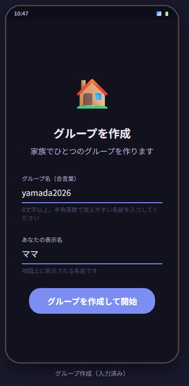
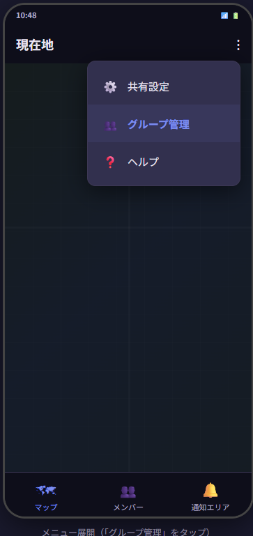
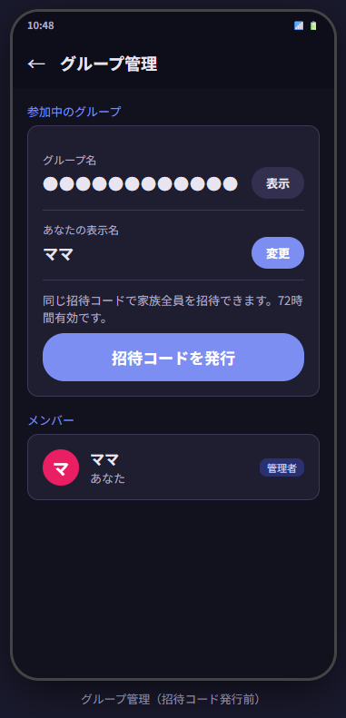
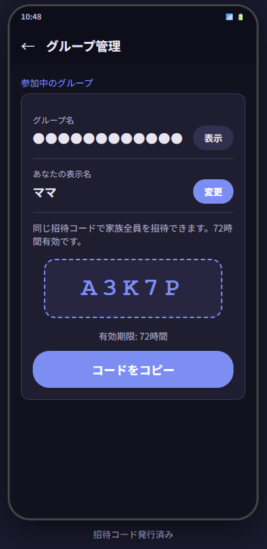
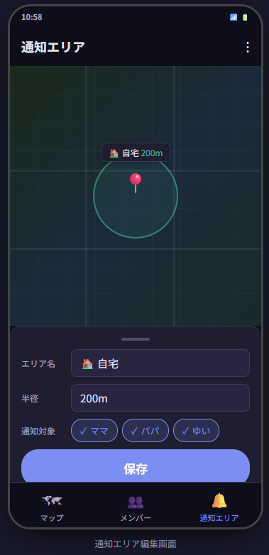
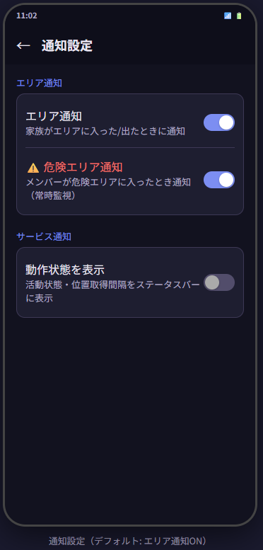
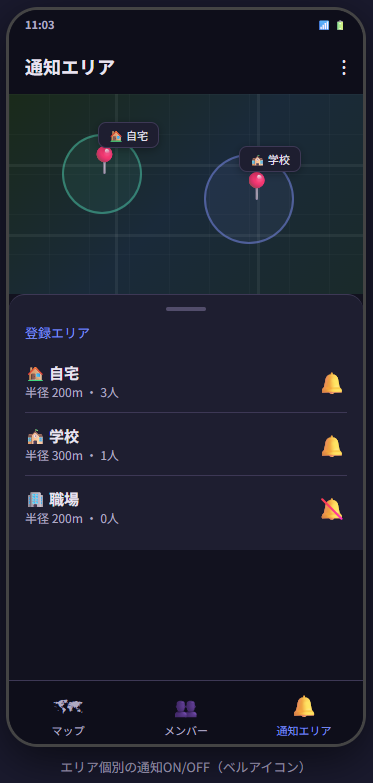
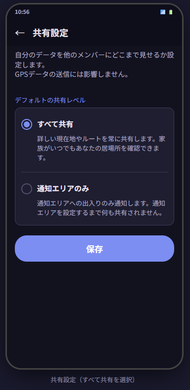

大人2人 + お子さん1人の
はじめてセットアップ
3人家族でKiniaを始める手順を、1つずつ解説します。
ご家族の代表がまとめて3台を設定するケースを想定しています。
手順をわかりやすくするため「お母さん」「お父さん」「お子さん」と表記していますが、ご家族の構成にあわせて読み替えてください。
セットアップ担当はどなたでもOKです。
まず確認 — あなたの家族に合う使い方は？
Kiniaには2つの使い方があります。下の質問に答えて、最適な設定タイプを確認しましょう。
お子さんの「今どこにいるか」を
地図でリアルタイムに確認したいですか？
タイプA: 通知エリアだけ
「学校を出た」「家に着いた」などの通知だけ受け取る、もっともシンプルな使い方です。
- 地図に位置は表示されない
- 歩数・元気度は共有される
- お子さんのプライバシーを尊重しやすい
- 初期設定のまま使える
タイプB: すべて共有
家族の現在地を地図上で確認でき、移動履歴も見られる使い方です。
- 地図にマーカーが表示される
- 移動ルート・軌跡が見られる
- 通知エリアの通知も届く
- 各メンバーが共有レベルを変更する操作が必要
各メンバーが自分のスマホから「共有レベル」を変更するだけで、いつでも切り替えできます。
タイプ比較表
| タイプA 通知エリアだけ |
タイプB すべて共有 |
|
|---|---|---|
| 地図上の位置表示 | ✕ なし |
◎ リアルタイム表示 |
| 通知エリアの通知 | ◯ あり |
◯ あり |
| 移動履歴・軌跡 | ✕ なし |
◯ あり |
| 歩数・元気度 | ◯ あり |
◯ あり |
| プライバシー | ◎ 高い（居場所は非表示） |
△ 全員に位置が見える |
| 追加設定 | ◎ 不要（初期設定のまま） |
△ 各端末で共有レベル変更 |
| おすすめ | 中高生以上のお子さん | 小学生のお子さん |
セットアップの全体像 約15〜20分
お母さんが3台のスマホを手元に集めて、順番にセットアップしていきます。
インストール
端末で設定
を発行
お子さん参加
権限設定
設定
・ 家族3人分のスマホ（Android 8.0以上）
・ 各端末のGoogleアカウント（ふだん使っているものでOK）
・ Wi-Fi環境（アプリのダウンロードに使用）
3台にKiniaをインストール 約3分
まず3台すべてにアプリをインストールします。
-
Google Play で「Kinia」を検索
または こちらのリンク から直接アクセス
- 「インストール」をタップ
- 3台すべてで同じ操作を繰り返す

事前にGoogleアカウントを作成しておいてください。Kiniaのログインに必要です。
13歳未満のお子さんの場合は、Googleファミリーリンクで管理アカウントを作成できます。
お母さんの端末でグループを作成 約2分
最初の1台目（お母さんのスマホ）でグループを作ります。
グループを作った人が自動的に「管理者」になります。
👩 お母さんのスマホで操作
-
Kiniaを起動して「Googleでログイン」
お母さんのGoogleアカウントを選択します
- 「新規グループを作成する」をタップ
-
グループ名（合言葉）を入力
例: 「yamada2026」「family123」など、半角英数で覚えやすい名前を入力します（8文字以上）。
※ グループ名は最初の1回だけ使います。毎回入力する必要はありません。 -
ニックネームを入力
地図上に表示される名前です。例: 「ママ」「お母さん」「名前」など
- 「グループを作成して開始」をタップ


続いて、お父さんとお子さんを招待します。
招待コードを発行する 約1分
引き続きお母さんのスマホで操作します。
👩 お母さんのスマホで操作
- 右上のメニュー（⋮）をタップ
- 「グループ管理」を選択
-
「招待コードを発行」をタップ
招待リンク付きのコードが表示されます。「コードをコピー」で共有できます。



お父さんとお子さん、それぞれ別のコードを発行する必要はありません。
有効期限は72時間です。今すぐ3台を設定するなら十分な時間があります。
「コードをコピー」をタップすると、招待リンク（
https://kinia.io/invite/xxxxx）をLINEなどで家族に送れます。リンクをタップするだけでKiniaが開き、参加画面が表示されます。
手元に3台を集めている場合は、直接操作してもOKです。
お父さん・お子さんの端末で参加 約3分
残りの2台で、それぞれグループに参加します。
どちらの端末が先でも構いません。
👨 お父さんのスマホで操作
-
Kiniaを起動して「Googleでログイン」
お父さんのGoogleアカウントを選択
-
ニックネームを入力
例: 「パパ」「お父さん」「名前」など
-
招待リンクをタップ、または招待コードを入力
LINEなどで受け取ったリンクをタップすれば自動でKiniaが開きます


👧 お子さんのスマホで操作
-
Kiniaを起動して「Googleでログイン」
お子さんのGoogleアカウントを選択
-
ニックネームを入力
例: お子さんの名前やニックネーム
- 同じ招待リンクをタップ、またはコードを入力
3台すべてで権限を設定 約5分
Kiniaが正しく動作するために、各端末で権限を許可します。
アプリ内のガイドに従って進めるだけでOKです。3台すべてで同じ操作を行います。
特に「バックグラウンド位置情報」と「省電力の除外」を設定しないと、
アプリを閉じた瞬間に位置の更新が止まります。
3台すべてで設定する権限
| 権限 | 設定内容 | 設定しないと？ |
|---|---|---|
| 位置情報 | 「許可」をタップ | 位置がまったく共有されない |
| バックグラウンド 位置情報 |
設定画面で 「常に許可」を選択 |
アプリを閉じると位置が止まる |
| 活動認識 | 「許可」をタップ | 歩行/車の判別ができない |
| 通知 | 「許可」をタップ | 通知エリアの通知が届かない |
| 省電力の除外 | 「許可」をタップ | スリープ中にGPSが止まる場合がある |
実際の画面イメージ

「許可する」をタップ

「設定を開く」→「常に許可」
Kiniaが順番に権限の設定画面を案内します。ボタンをタップして進めるだけなので、迷うことはありません。
Kiniaは移動中だけGPSを使い、止まっているときはほとんどバッテリーを消費しません。
位置データはグループ外に漏れない仕組み（座標暗号化・グループ内限定表示）で保護されています。
詳しくは 安全性について をご覧ください。
通知エリア・共有レベルの設定 約5分
最後のステップです。フローチャートで選んだタイプに合わせて設定しましょう。
通知エリアの設定（お母さんのスマホで操作）
👩 お母さんのスマホで設定
通知エリアはグループ全体で共有されるため、1台から設定すれば全員に反映されます。
- 画面下の「通知エリア」タブをタップ
-
地図上で「自宅」の場所をタップ
設定パネルが表示されます
-
エリア名を入力
例: 「自宅」「おうち」
-
半径を調整
初期値は200m。住宅街なら150〜200m程度がおすすめです
-
通知を受け取りたいメンバーを選択
3人全員にチェックを入れると、誰が帰宅しても全員に通知が届きます

おすすめの通知エリア設定
🏠 自宅
半径: 150〜200m
対象: 全員
帰宅したら家族に通知
🏫 学校
半径: 200〜300m
対象: お子さん
学校を出たらお母さんに通知
🏢 職場（任意）
半径: 200m
対象: お父さん
退勤したらお母さんに通知
学校や職場は後からいつでも追加できます。
最初からたくさん設定すると、通知が多くなりすぎることがあります。
通知のON/OFF設定について
通知エリアの通知は初期設定でONになっています。
通知の管理は2段階で行えます。

メニュー → 通知設定

ベルアイコンで切り替え
| 設定レベル | 場所 | デフォルト |
|---|---|---|
| 全体 | メニュー → 通知設定 「エリア通知」スイッチ |
◯ ON |
| エリア個別 | 通知エリアタブの一覧 各エリアのベルアイコン |
◯ ON（対象メンバーがいれば） |
「通知設定」の「エリア通知」をOFFにすれば、すべてのエリア通知が一括で止まります。
特定のエリアだけ止めたい場合は、エリア一覧のベルアイコンをタップして個別にOFFにできます。
共有レベルの変更（3台それぞれで操作）
お母さんが3台を手元に集めて、1台ずつ操作します。
👩 お母さんのスマホ
- 右上のメニュー（⋮）→「共有設定」
- 「すべて共有」を選択して保存
👨 お父さんのスマホ
- 右上のメニュー（⋮）→「共有設定」
- 「すべて共有」を選択して保存
👧 お子さんのスマホ
- 右上のメニュー（⋮）→「共有設定」
- 「すべて共有」を選択して保存


お子さんが大きくなったら、自分で「通知エリアのみ」に戻すこともできます。
プライバシーのコントロールは、あくまで各自の手に委ねられます。
通知エリアの設定
タイプBでも通知エリアは設定できます。設定方法はタイプAと同じです。
👩 お母さんのスマホで設定
- 画面下の「通知エリア」タブをタップ
- 場所をタップ → エリア名・半径を設定
- 通知対象メンバーを選択
エリア通知は初期設定でONです。
全体のON/OFFはメニュー → 通知設定、
エリア個別のON/OFFは通知エリア一覧のベルアイコンから変更できます。
詳しくはタイプAの「通知のON/OFF設定について」をご覧ください。
セットアップ完了!
お疲れさまでした。これで3人家族のKiniaセットアップは完了です。

（タイプB: すべて共有の場合）
セットアップ確認チェックリスト
- 3台すべてにKiniaがインストールされている
- 3人全員がグループに参加している（メンバー一覧で確認）
- 3台すべてで「バックグラウンド位置情報」が「常に許可」になっている
- 3台すべてで「省電力の除外」が設定されている
- 通知エリア「自宅」が設定されている
- （タイプBの場合）3台すべてで共有レベルが「すべて共有」になっている
各端末でアプリを開いた状態で少し歩いてみると、1〜2分で位置が反映されます。
よくあるトラブル
位置が更新されない場合
-
「バックグラウンド位置情報」が「常に許可」になっているか確認
Androidの設定 → アプリ → Kinia → 位置情報 で確認できます
-
省電力モードがオンになっていないか確認
一部の端末では省電力モードがアプリの動作を制限します
-
アプリ内の「更新」ボタンをタップ
手動で最新の位置を取得します
通知エリアの通知が届かない場合
-
「通知」権限が許可されているか確認
Android 13以降は通知の許可が別途必要です
-
通知エリアの半径が小さすぎないか確認
GPSの精度を考慮して、100m以上に設定するのがおすすめです
解決しない場合
kinia.app@gmail.com までご連絡ください。
端末名・Androidバージョン・Kiniaバージョン・症状の詳細を添えていただくとスムーズです。